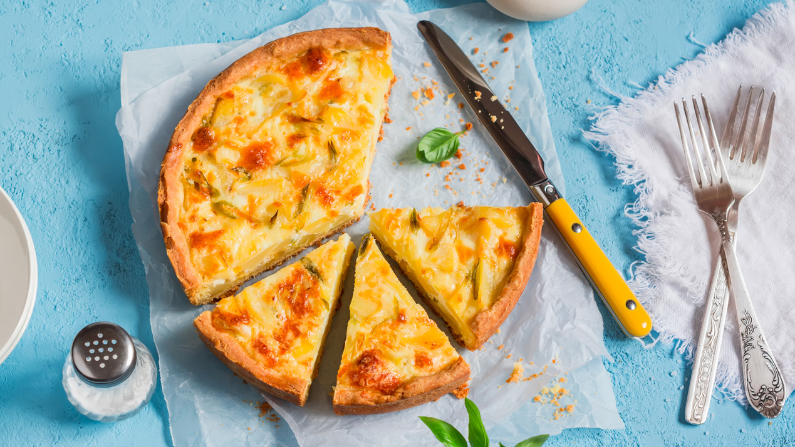

THAT'S HOW YOU MAKE A CHEESE PIE

All the ingredients we're gonna need:
- 300g Wheat flour
- 125g butter
- 2 tablespoon water
- 3 eggs
- 300ml semi-skimmed milk
- 1 teaspoon salt
- 1 pinch peppers
- 150g Grated Arla Lactofree Cheddar
- 300g salad mix
Directions:
- Rub the flour and butter together to make a crumbly mixture.
Add the water and work quickly together to form a dough.
Roll out the dough for an oven tin 15 x 35 cm, or a round tin about 24 cm in diameter.
- Let rest in the refrigerator for about 30 minutes. Heat the oven to 200 °.
- Par-bake the pie case for about 10 minutes. Beat together eggs, milk, salt and pepper. Add the cheese and mix well.
- Pour the filling into the pie case and bake in the middle of the oven for about 25 minutes. Serve the pie with salad.
Source of that recipe